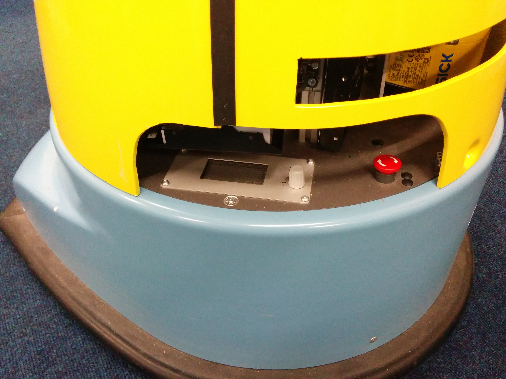

Rules and guidelines on how to use the STRANDS robots
Important security guidelines
- The robots are never to be left alone. While the robot is operating outside of your allocated coding area, someone has to accompany the robot all the time. Even thought we have a few security measures in place, we don't want the robot falling down the stairs.
- Engage the emergency break when robot is unsupervised. See picture of button. Even if you are absolutely sure that nothing is running, it still might just go off because someone forgot to kill his software.
- Always put the robot on the charging station when it is not used. Our robot's batteries last for approx. 8 hours but you really don't want to sit idly because the robot ran out of battery. Remember to put it back to charge when your not running anything.
- Handle the robot with care. These robots are expensive machines and our project depends on them working properly. Please do not drive the robots into obstacles or mistreat them otherwise. The robot does have a bumper sensor in the bottom which kills the motors if pressed but be careful when driving around, regardless.
Emergency button: 
Connecting to the robot
Please follow this guide on how to set-up remote access to the robot: [[Robot-VPN-to-connect-from-Desktop-PCs-and-Laptops]]
The username for the robot is lamor. Please ask a member of the team for the password.
Basic commands
ROS
The most basic commands to be run on the robot:
- When executing something, make sure your workspace is sourced so the all the environment varaiables point to the right code:
source ~/<your_workspace>/devel/setup.bash
- Running ros nodes either via
rosrun:
rosrun your_package your_node
or roslaunch if you created a launch file for it or are using a package that provides one:
roslaunch your_package your_launch_file.launch
- Building your workspace, either:
cd ~/<your_workspace>; catkin_make
or
catkin_make -C ~/<your_workspace>
For more basic ROS commands please have a look at the tutorials.
Starting the simulator
- Starting morse:
roslaunch strands_morse uol_bl_morse.launch
this will start the default summer school environment which resembles the location of the school.
- Starting the simulator in fast (wireframe) mode:
roslaunch strands_morse uol_bl_morse.launch env:=uol_bl_fast
this does not allow to use openni but is considerably faster
- Starting the simulator with the human model
roslaunch strands_morse uol_bl_morse.launch env:=uol_bl_human
or
roslaunch strands_morse uol_bl_morse.launch env:=uol_bl_human_fast
for the fast mode. The human can be controlled via the WASD.
- The robot is controlled with the arrow keys.
- To switch between human control and moving the camera via WASD through the environment, press
F5 - Holding
Ctrland moving the mouse rotates the camera - Press
F11to reset robot and human to their start positions
Tmux
On our robots we use a software called tmux that allows to run thing in the background, have multiple terminals in one and detach from them without killing the processes.
- The main components controlling the hardware will run in a tmux session that is named like the user
lamor. To attach to this run
tmux a -t lamor
but please do not start or stop random components without consulting a member of the STRANDS team.
- To start your own session, run
tmux new -s <session_name> - You can then reattach to this session via
tmux a -t <session_name> - List all current tmux sessions:
tmux ls - In the following a few hotkeys that are useful in tmux:
- The tmux magic key combination is
Ctrl + bfrom here an referred to as tmux-key. This has to be pressed to enter the control mode in tmux. Thetmux-keyshould be pressed independently of the actual control shortcut, so presstmux-keyfirst and then press any of the hotkeys. - Detaching from the current session:
tmux-key, d - Creating a new window:
tmux-key, c - Switching windows: next:
tmux-key, n, previous:tmux-key, p, switch to a specific window:tmux-key, 0-9, get an overview of all windows and select one:tmux-key, w - Switching into scroll mode:
tmux-key, [ - Splitting the current window: vertically:
tmux-key, %, horizontally:tmux-key, ", switching between windows on split screen:tmux-key, <arrow_key>, zooming in and out of a window:tmux-key, z
A full list of all tmux commands can be found in the official manual or by using man tmux
We highly advise that you do use tmux to ensure that a bad network connections does not kill your programme and to check what is already running on the robot.
Please note that only one person at a time can use the same tmux window. If you attach to a session and see someone typing something, do not just interfere but find out who is using this session.
The joypad
All robots also function as expensive remote controlled cars and can be operated via the provided joypad. Have a look at the cheat sheet to find out how it works. The most important one is the 'deadman switch' which has to be pressed in order for the robot to accept any commands and the emergency stop button which kills the motors immediately. Also the start button can be used to reset the bumper sensor and enable the motors again.
What is not mentioned on the sheet is the X button. When pressed the robot will search for it's charging station by turning on the spot and looking for the 'Robot Station' sign. If found, the robot will attempt to dock. If the robot is already charging it will undock and calibrate it's position. Please for the process to finish, i.e. until the robot closed and opened it's eyes twice. Both of the activities are automated and do not require you to do anything and you shouldn't interfere with it either.
Calibrating the most important components
3D obstacle avoidance
If your robot refuses to drive, the reason might be that the 3D obstacle avoidance is miscalibrated and it sees obstacles where there are none. This can happened when the so-called 'chest cam' (the camera under the robots head facing downwards) has been moved. If this happens the costmaps in rviz should show you a lot of obstacles all around the robot. To recalibrate make sure the space in front of the robot is free and run the following directly on the robot as it needs a graphical interface:
rosrun rosrun calibrate_chest calibrate_chest
This will open a window showing the point cloud. You can zoom out using the keyboard's touchpad and you can close the window via q. After the camera has been calibrate, he new parameters have to be published:
rosrun calibrate_chest chest_calibration_publisher
This will terminate after 10 seconds and update the calibration parameters. This should have removed the obstacles on the costmaps. If not, you can try to remove them yourself via:
rosservice call /move_base/clear_costmaps
Calibrating the autonomous docking
This only has to be done once. Make sure that the robot is standing on its station and charges (LED on the charging station). Make also sure that the robot can see the 'Robot Station' sign. Run:
rosrun scitos_docking visual_charging_client 100
Useful packages:
Packages that are not really part of the scientific efforts of STRANDS but useful for application design:
- Speech synthesis using marytts
- Webserver used for GUIs
- Make your robot tweet
- Finding circles to trigger events like tweeting
- Our mongodb based datacentre
VPN to the robots
In order to connect other machines to the robot's ROS infrastructure and to talk to all the hosts in that infrastructure, any external computers need to connect to the robot using a VPN (Virtual Private Network) to obtain an IP address in the robot subnet (192.168.0.x/24). We have set up a PPTP-based VPN for this purpose, allocating IPs in the range 192.168.0.230-253. (The IP prefix could differ, e.g. it could also be 10.0.0.x etc.)
Setting up an Ubuntu machine to connect to the robot's VPN
connecting via Network-Manager
- Make sure the Network-Manager PPTP plugin is installed:
sudo apt-get install network-manager-pptp-gnome - Create a new VPN connection in Network-Manager using PPTP protocol
- Set
WLAN_IPas the gateway address (check on the robot usingifconfigto find out which one that is) - set user (e.g.
lamorand password:lamor2015) - In the "VPN" tab, choose "Advanced", and select "Use Point-to-Point encryption (MPPE)"
- In the "IPv4 Settings" tab, choose "Address Only"
- Click on "Routes" in the "IPv4 Settings" tab, and select "Use this connection only for resources on its own network"
- Still in "Routes" add a static route with
- Address:
192.168.0.0(or10.0.0.0if your robot has a different local net) - Netmask:
24 - Gateway:
0.0.0.0 - save and connect to the new VPN network,... Tadaaa, you should be connected. (Note: This connection is only used to connect to the robot, all other network traffic on your computer still goes via the default route, not the robot!)
- in order to use this VPN with ROS, make sure you run the ros-network.sh script in each of your terminals you want to use. The argument should be the local IP of the
ROS_MASTER, e.g../ros-network.sh 192.168.0.100